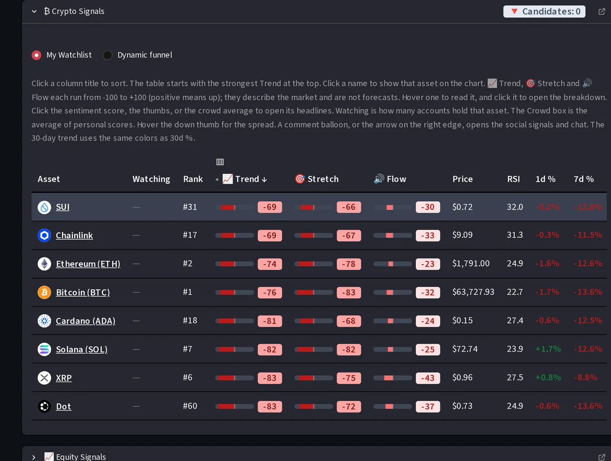
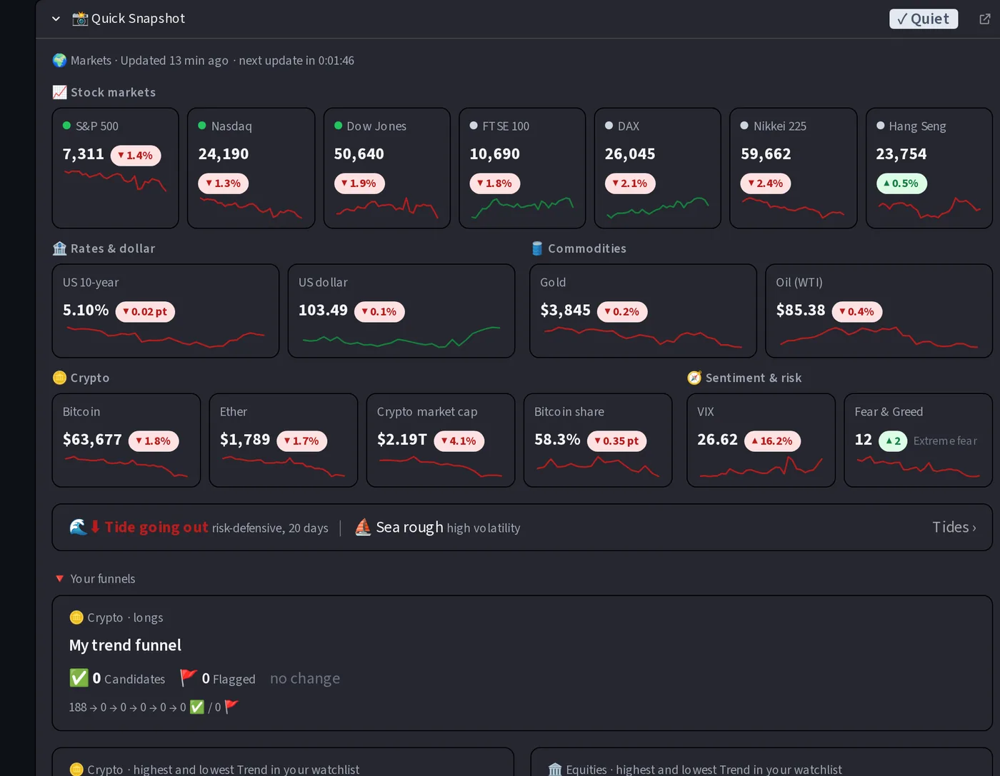
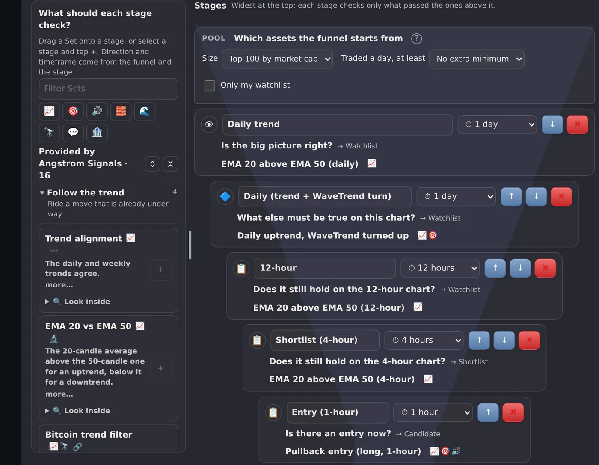
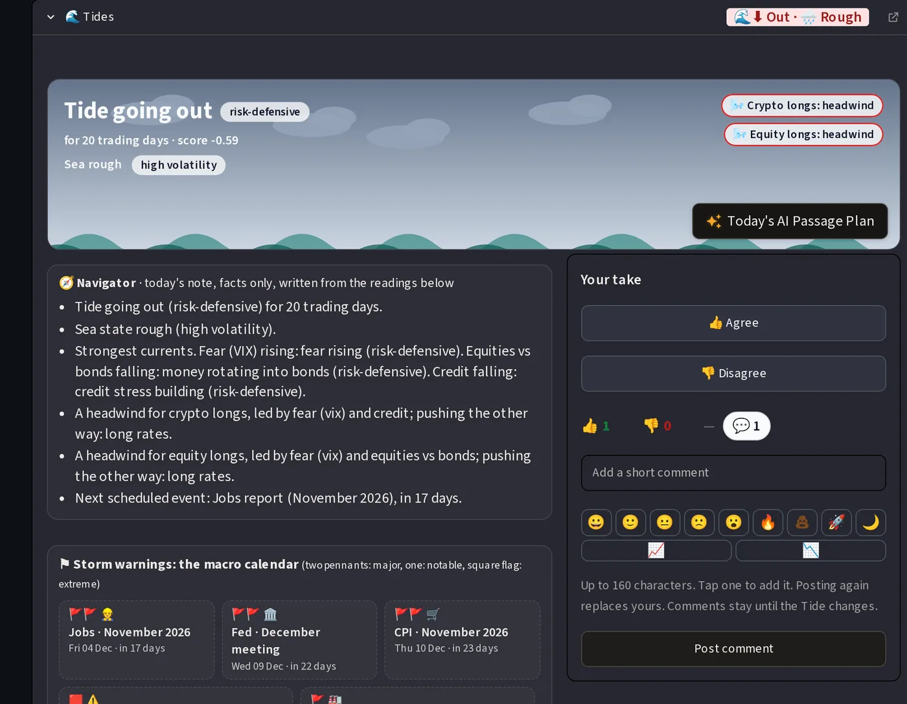
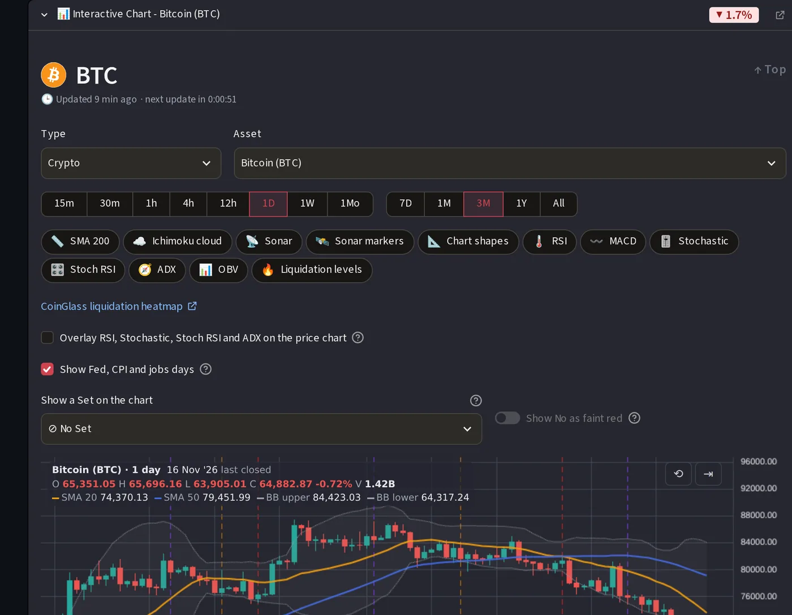

Features
Readings, sentiment and a community view for every asset you follow; a workspace to build, scan and test your own rules; the macro tide; and an AI that knows it all.
📋 Your watchlists
Choose whether you trade crypto, equities or both. Add coins by ticker or name and equities by ticker. Watchlists, alert settings, chart choices and layout are saved to your account. Every section can be opened, folded or popped out into its own window, and the app works on a phone, a tablet or a wide screen.
📈 Three readings on one scale
Each asset gets three technical readings, all on the same scale from −100 to +100: 0 is neutral or mixed, above 0 is up or positive, below 0 is down or negative, and the further from 0, the stronger.
- 📈 Trend: which way and how firmly the asset is moving.
- 🎯 Stretch: how far it has run, overbought or oversold.
- 🔊 Flow: whether volume and money flow back the move.
They are kept separate, because they measure different things. 🔍 Why these readings shows what moved each one. The table columns are yours to choose: any Group or Set you build can be a column.

⚡ Quick Snapshot
The page opens with the markets (major indices, VIX, the US 10-year yield, the dollar, gold, oil and crypto totals), the Tides line, your funnels, and What changed: readings that crossed a line you alert on, and the biggest moves, each with badges for upcoming earnings, headline sentiment and how close it is to an alert.

📰 Sentiment, and the community's view
An AI reads the last week's headlines for each asset, and for the crypto and equity markets, and scores each one with a one-sentence summary. Beside every score you can agree, disagree, or give your own score and a short comment. Everyone's votes become a community reading shown next to the AI's, so you can see where traders think the headlines have it right.
🧩 Angstrom Lattice: your research workspace
Lattice sits under the chart and works from the bottom up: signals, then Groups, then Sets, then scans.
- Signal Groups combine signals into your own reading from −100 to +100, with labels such as Bullish and optional confirmations and vetoes. Trend, Stretch and Flow are themselves starter Groups you can copy.
- Signal Sets turn Groups and signals into a Yes or No decision, for example Trend is Bullish and RSI is below 70. A line can read a fixed asset (Coinbase while scanning crypto), and a THEN box adds order in time: this, then that within N closes. Missing data gives Unknown, never a guessed Yes.
- 📡 Sonar oscillators: WaveTrend, money flow, the Stochastic on OHLC4 and divergence across four timeframes, ready to use in Groups and Sets.
- Provided library: ready-made Groups, Sets and alerts built around real setups, such as a pullback in an uptrend, a breakout with volume or a volatility squeeze. Look inside shows how any of them is built, and you can copy one and make it yours.
🔎 Prism: scan your watchlist
Run any Set across your watchlist now, at a past moment, or on a schedule with alerts. Results show Yes, No and Unknown with the reason for each. 🕰️ Visualize History draws a Set's past answers as coloured bands behind the price chart.
🔻 Funnels
A funnel narrows a whole market in stages, the way many traders work: the daily chart first, then 12-hour, 4-hour and 1-hour, each stage a Set. Assets move through Pool, Watchlist, Shortlist, and on to Candidate or Flagged, for longs or shorts, and you get an alert when a new Candidate arrives. Start from a provided funnel or build your own; your tables can show a funnel instead of your watchlist.

🔬 What followed
Study any Set against ten years of daily history across the studied coins and equities. The study compares what happened after its Yes days with comparable ordinary days, runs a luck check, and gives a verdict by fixed rules. "Too few to tell" is a common, honest answer. How the testing works.
🌊 Tides: the macro context
Twelve currents (rates, the dollar, inflation, gold, fear, copper against gold, oil, credit, equities against bonds, crypto rotation and more), each scored against its own last five years. Together they give the Tide (coming in, slack or going out), the Sea state (calm to storm), a headwind or tailwind for each market, and storm warnings around scheduled events such as Fed decisions, CPI and jobs reports. The waves show each current over time with past events marked.

✨ AI Navigator and the Passage Plan
A side panel on every page. Ask where things are, what a reading means, or how to build and test an idea, step by step. It knows the whole app, your watchlist, Groups, Sets and funnels, today's Tides and the asset you have open, and links the right training video. Paste a screenshot and ask about it. Today's AI Passage Plan charts the day's conditions, the week's events and the winds for your own watchlist and funnels. The Navigator explains; you make the decisions.
🕯️ Interactive chart
Candles from 5 minutes (crypto) to monthly, the indicators you pick, Sonar markers, chart shapes, the bands from Visualize History, and Fed, CPI and jobs days. The levels traders watch: liquidation levels, fair value gaps, single prints, anchored VWAP and the volume profile. Drawing tools (trend lines, Fibonacci, measure, long and short positions, notes) are saved to your account and shown on every timeframe. Under the chart, the ladder helper plans a set of orders, by the daily move or on Fibonacci levels, and draws them on the chart.

🎯 Positioning data
- Max pain: where open options would be worth the least at expiry, with a history built from our own recorded snapshots.
- Leverage and liquidations for crypto: where leveraged positions cluster.
💬 Social stream, chat and communities
A side panel with a stream of short notes tied to assets and sentiment, and a chat below it. Messages can go to everyone, to one of your communities, or privately to one person. Favourite people, form communities, reply, vote, and report anything that breaks the rules. You choose who can message you, and you can block anyone.
🔔 Alerts
Alerts from your scans, funnels and the built-in reading alerts arrive in the app and by email, as they happen or in a daily summary. Checks run every few minutes in the background, even when you are logged out.
🌐 Twelve languages
English, Chinese, French, German, Indonesian, Japanese, Korean, Portuguese, Spanish, Thai, Turkish and Vietnamese. The app follows your browser's language, and a flag switches it.
🎬 Help and training
Help and guides in the app, short training videos with captions, and the Feedback box. We are a start-up and keen for new ideas.
How fresh is the data?
Crypto prices come from Binance, equities from Yahoo Finance, options from Deribit and Yahoo. Prices for every watched asset are saved about every five minutes; news sentiment about every twelve hours. Both are shared, so everyone sees the same numbers.